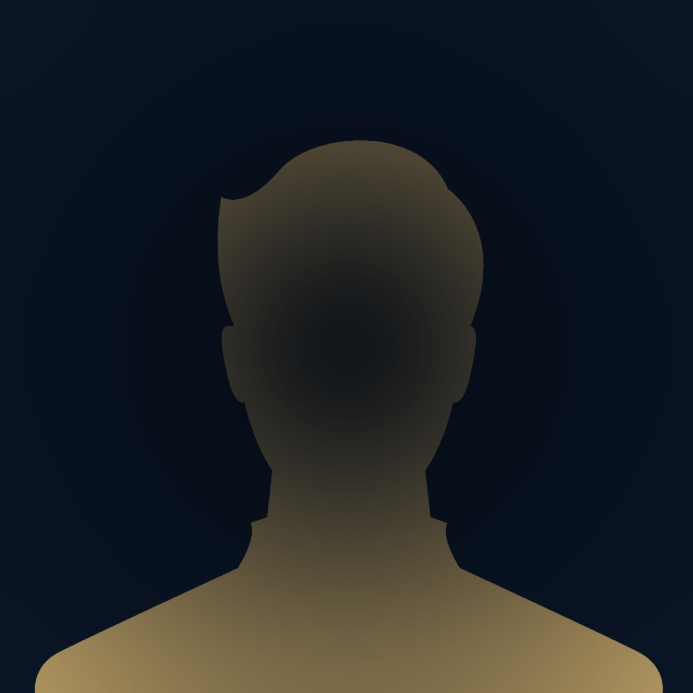

Yılların tecrübesiyle aileniz, işiniz ve değerleriniz için kişiye özel sigorta çözümleri sunuyoruz. Doğru teminat, şeffaf fiyat, her an ulaşılabilir bir partner.
7/24 destek hattımızla her an yanınızdayız.
Tek bir şirketle bağlı kalmadan onlarca seçeneği karşılaştırıyor, bütçenize ve ihtiyacınıza en uygun poliçeyi belirliyoruz.
Her hizmet için onlarca sigorta şirketinden fiyat karşılaştırıp, size en uygun teklifi sunuyoruz.
Aracınız için hem zorunlu trafik hem genişletilmiş kasko paketleriyle yol boyunca güvende olun.
WhatsApp'tan Teklif Al →Yangın, hırsızlık, deprem ve doğal afetlere karşı evinizi ve eşyalarınızı kapsamlı şekilde koruma altına alın.
WhatsApp'tan Teklif Al →Sevdiklerinizin yarınını güvence altına alan özel sağlık ve hayat sigortası seçenekleriyle huzurla yaşayın.
WhatsApp'tan Teklif Al →İşletmenizin tüm risklerine karşı; yangın, sorumluluk, taşınan emtia ve daha fazlası için butik çözümler.
WhatsApp'tan Teklif Al →Bitkisel ürün, sera, hayvan hayat ve tarım alet sigortalarıyla emeğinizi don, dolu, sel ve kuraklığa karşı güvence altına alın.
WhatsApp'tan Teklif Al →
Sonkur Sigorta olarak yıllardır Adıyaman'da aileler, esnaflar ve kurumlarla aynı yolda yürüyoruz. Hasarın değil, güvenin sigortası olduğumuza inanıyoruz. Her poliçenin arkasında bir hayat, her hayatın arkasında bizim sözümüz var.
Anlaşmalı olduğumuz şirketlerle sınırlı kalmıyor; Türkiye'deki tüm sigorta şirketlerinden teklif alarak bütçenize ve ihtiyacınıza en uygun poliçeyi şeffaf koşullarla size sunuyoruz.
Hasar anında bir telefonla her şeyi hallettiler. Bir sigortacıdan değil, bir aileden destek aldım gibi hissettim. İçi rahat insanların yeri.
Müşterilerimizden en sık aldığımız soruları derledik. Sorunuzun cevabını bulamadıysanız WhatsApp'tan bize yazın.
Evet, ikisi de etkiliyor. 2017'den bu yana zorunlu trafik sigortasında tavan fiyat uygulaması var; yani devlet bir üst limit belirliyor. Ancak sigorta şirketleri bu tavan altında size kişiye özel fiyat verebiliyor ve hesaplama yaparken şu kriterleri dikkate alıyorlar:
📌 Sürücünün yaşı: Genç sürücüler (özellikle 25 yaş altı) istatistiksel olarak daha fazla kaza riski taşıdığı için primleri daha yüksek olabiliyor. Yaş ilerledikçe ve sürüş tecrübesi arttıkça fiyat genelde düşüyor.
📌 Aracın yaşı: Eski araçlar daha yüksek tamir-bakım maliyeti ve kaza riski taşıdığı için primleri biraz daha yüksek olabiliyor. Sıfır araçlarda ise hasarsızlık geçmişi olmadığından ilk yıl fiyat yüksek başlar, sonraki yıllarda hızla düşer.
📌 Diğer etkili faktörler: Plaka ili, hasar geçmişi (basamak), aracın markası-modeli, kullanım amacı, sürücünün cinsiyeti ve mesleği. Bunların hepsi birleşince size özel fiyat çıkıyor.
Biz birçok şirketten teklif alıp size en uygun olanı sunuyoruz. Hatta aynı araç için şirketler arasında %30-40'a varan fark görebiliyoruz.
İkisi farklı şeyler ve birbirinin yerine geçmez. Aralarındaki temel farklar:
🏛️ DASK (Zorunlu Deprem Sigortası): Devlet tarafından zorunlu kılınmıştır. Sadece deprem ve depreme bağlı yangın, infilak, tsunami, yer kayması zararlarını karşılar. Sadece binayı kapsar — eşyalar dahil değildir. Tavan limiti devlet tarafından belirlenir.
🏠 Konut Sigortası: İsteğe bağlıdır ama çok daha kapsamlıdır. Yangın, hırsızlık, sel, su baskını, cam kırılması, boru patlaması, fırtına, komşuya verilen zararlar, hatta cep telefonunuzun çalınması bile poliçeye eklenebilir. Hem binayı hem de eşyaları kapsar. Limitlerini ve teminatlarını siz belirlersiniz.
🤝 İdeal yaklaşım: İkisini birlikte yaptırmak. DASK olmadan zaten elektrik-su aboneliği, tapu işlemi yapamazsınız. Konut sigortası ise gerçek anlamda evi koruma altına alır. Deprem hasarı DASK limitini aştığında konut sigortası devreye girer.
Hayır, kasko her şeyi karşılamaz. Kasko aracınızdaki çoğu hasarı karşılar; ancak bazı önemli istisnalar var:
❌ Kaskonun karşılamadığı durumlar:
• Alkollü veya uyuşturucu etkisi altında yapılan kazalar
• Ehliyetsiz kişinin kullandığı araçlardaki hasarlar
• Aracın bakımsızlığı, yağsızlık, susuzluk, paslanma gibi nedenlerle oluşan motor arızaları
• Kontak anahtarı üzerinde unutulmuş veya kapısı açık unutulmuş aracın çalınması
• Ruhsatta belirtilen taşıma kapasitesinin üzerinde yük/yolcu taşınmasından kaynaklı hasarlar
• Savaş, terör, nükleer kazalar (terör için ek teminat alınabilir)
• Yarış veya hız denemeleri sırasında oluşan hasarlar
✅ Standart kaskonun karşıladıkları: Çarpma-çarpışma, yangın, hırsızlık, vandalizm, doğal afetler (poliçeye göre değişir), cam kırılması.
💡 Tavsiyemiz: "Genişletilmiş kasko" veya "tam kasko" tercih ederek deprem, sel, ferdi kaza, yol yardım, ikame araç gibi ek teminatları da poliçenize ekletmek. Hangi teminatların size mantıklı olduğunu beraber konuşalım.
Yasal süreler poliçe türüne göre değişiyor:
🚗 Trafik Sigortası: Tüm belgeler ve eksper raporu eksiksiz teslim edildikten sonra 8 iş günü içinde ödeme yapılması yasal zorunluluk. Pratikte ortalama süreç 7-15 gün arasında tamamlanıyor.
🛡️ Kasko Sigortası: Yasal üst süre 45 gün olsa da, dosya tamamlandıktan sonra genelde 10-15 gün içinde ödeme gerçekleşiyor.
⚠️ Önemli — Hasar bildirimi süresi: Kazadan sonra 5 iş günü içinde sigorta şirketine ihbar yapmanız gerekiyor, yoksa hak kaybı yaşayabilirsiniz. Bu yüzden kazadan hemen sonra bizi arayın, biz de süreci sizin için başlatalım.
📞 Bizim avantajımız: Hasar anında muhatap aramakla, evrak peşinde koşmakla siz uğraşmazsınız — sürecin tamamını biz takip ederiz, ödemeniz hızlanır.
Kaza anında soğukkanlı kalmak en önemlisi. Şu adımları sırayla yapın:
1. Önce can güvenliği: Kendiniz ve karşı tarafta yaralı varsa 112'yi arayın. Aracı güvenli bir noktaya çekin, dörtlüleri yakın, reflektör koyun.
2. Yaralı yoksa: Polis beklemeden Kaza Tespit Tutanağı doldurabilirsiniz (her sürücüde olması gereken matbu form). Yaralı varsa polise haber verin, onlar gelmeden tutanak doldurmayın.
3. Bol bol fotoğraf çekin: Araçların konumu, plakalar, hasarlı bölgeler, kaza yeri (yol işaretleri, lambalar dahil). Mümkünse video da çekin.
4. Karşı sürücüden bilgileri alın: Ehliyet, ruhsat, sigorta poliçesi fotoğrafı. Birbirinizden iletişim numaranızı paylaşın.
5. Bizi arayın: Hasar dosyasının açılması, eksper, anlaşmalı servis seçimi gibi tüm süreci biz yönetelim. 5 iş günü içinde ihbarda bulunmamız gerekiyor.
📌 Yapmamanız gerekenler: Olay yerini terk etmeyin, suçu kabul eden yazılı belge imzalamayın, karşı tarafla pazarlık yapmayın.
Evet, taksit imkânımız var. Sigorta primlerinizi tek seferde değil, kredi kartınıza 3, 6, 9 hatta 12 taksite kadar bölebiliriz.
💳 Taksit seçenekleri sigorta şirketine ve kart bankanıza göre değişiyor — biz size en avantajlı taksit fırsatı olan şirketi araştırıp sunuyoruz.
📋 Bunun yanında alternatif ödeme yöntemleri de var: havale/EFT, banka taksiti, hatta bazı şirketlerin özel kampanya dönemlerinde 9-12 ay vade farksız taksitleri.
📞 Detaylar için bizi arayın, mevcut kampanyaları size özel olarak araştıralım.
Evet, hatta öneriyoruz! İkisi birbirini tamamlayan farklı sigortalardır, çakışma yaratmaz.
🤝 Birlikte yaptırmanın avantajı: DASK zaten zorunludur ve sadece deprem hasarlarını sınırlı limitle karşılar. Konut sigortası ise hem DASK'ın yetmediği yerde devreye girer, hem de yangın, hırsızlık, sel, cam kırılması, eşya zararları gibi DASK'ta hiç olmayan riskleri kapsar.
💡 Pratik örnek: Depremde eviniz hasar gördü diyelim. DASK belirli bir limite kadar bina hasarınızı öder. Konut sigortanız varsa hem aşan kısmı tamamlar, hem de evdeki buzdolabı, televizyon, mobilya gibi eşyalarınızın zararını da karşılar.
🏠 Kiracıysanız bile konut sigortası yaptırabilirsiniz — sadece eşyalarınızı güvence altına alır. Çoğu kiracının bilmediği bir hak.
Evet, kalan günlerin parası iade edilir! Çoğu insan bunu bilmediği için binlerce TL kaybediyor. Aracınızı satınca 3 seçeneğiniz var:
💰 1. İptal edip parayı geri al: Trafik sigortanız ve kasko poliçenizin kullanılmamış günleri için gün hesabıyla iade alabilirsiniz. Örneğin 12 aylık poliçede 7 ay kullandıysanız, kalan 5 ayın primi size geri ödenir.
🔄 2. Yeni alacağınız araca aktar: Yeni bir araç alacaksanız, mevcut poliçenizdeki hasarsızlık indiriminizi yeni araca taşıyabiliriz. Bu çok değerli çünkü sıfırdan başlamamış olursunuz.
⚠️ Dikkat: Araç satışı sonrası 15 iş günü içinde sigorta şirketine bildirim yapılması gerekiyor — yoksa para iadesi alamayabilirsiniz veya sonradan size kesilen cezalar çıkabilir.
📞 Aracınızı sattıysanız hemen bizi arayın, hangi seçeneğin sizin için en avantajlı olduğunu hesaplayalım, işlemleri biz yapalım.
Hasarsızlık indirimi, dikkatli sürücülere yıllar içinde ödüllendiren bir sistemdir. Doğru kullanıldığında trafik sigortası priminizi %65'e kadar düşürebiliyor.
📊 Basamak sistemi nasıl çalışır?
İlk kez sigorta yaptıran sürücü 4. basamaktan başlar. Her hasarsız geçen yıl için bir basamak yukarı çıkarsınız:
• 4. basamak: Başlangıç (indirim yok)
• 5. basamak: %10 indirim
• 6. basamak: %20 indirim
• 7. basamak: %50 indirim
• 8. basamak: %65 indirim (7. basamakta 5 yıl kaldıktan sonra)
⚠️ Hasar yapınca ne olur?
• Maddi hasarlı kaza: 1 basamak aşağı düşersiniz
• Yaralı/ölümlü kaza: 2 basamak aşağı düşersiniz
• En kötü senaryoda 1. basamağa kadar inebilir, primler %150 sürprim ile yenilenebilir
💡 İndiriminizi nasıl korursunuz?
📌 Küçük hasarları sigortaya bildirmeyin: Eğer hasar tutarı düşükse (örn. 5.000 TL bir tampon değişimi), bunu cebinizden ödemek uzun vadede daha kârlı olabilir. Çünkü o yıl indiriminizi kaybedersiniz, ileride çok daha fazla prim ödersiniz.
📌 Karşı taraflı kaza ve siz kusursuzsanız: Hasarsızlık indiriminiz etkilenmez! Karşı tarafın sigortası öder, siz basamağınızı korursunuz.
📌 Kasko değer kaybı talebinde: Bunu karşı tarafın trafik sigortasından isterseniz indiriminize zarar gelmez.
🎯 Bizim avantajımız: Hasar yaptığınızda "bunu sigortaya bildirsem mi, kendim mi yapsam?" diye karar verirken sizi yıllık bazda hesaplayıp en avantajlı yola yönlendiriyoruz.
Evet, kesinlikle şart! Sıfır araç aldığınızda en az iki sigortaya hemen ihtiyacınız var:
🛡️ Zorunlu Trafik Sigortası: Plakanız takıldığı andan itibaren yasal zorunluluk. Sigortasız tek bir metre yol bile alamazsınız — yakalanırsanız hem ağır para cezası alırsınız hem aracınız trafikten men edilir. Galeri/bayi genelde teslimattan önce bu sigortayı yaptırır ama bunu mutlaka kontrol edin.
🚗 Kasko Sigortası: Yasal zorunluluk değil ama çok güçlü tavsiye ederiz. Yeni almış olduğunuz sıfır aracın bir gün içinde sürtünmesi, küçük bir kazada hasar görmesi bile yüksek tamir maliyeti çıkarır. Sıfır araçta küçük bir tampon hasarı bile 50.000-80.000 TL tamir tutabilir.
💎 Sıfır araç sahiplerine özel avantajlar:
• Bazı şirketler sıfır araçlarda "yeni değer klozu" sunar — ilk 1-2 yıl içinde aracınız pert olursa size aynı modelin sıfır halini alır kadar tazminat öderler. Standart kaskoda ikinci el değer üzerinden ödeme yapılır.
• Sıfır araçta genişletilmiş kasko (sınırsız İMM, deprem, sel, ferdi kaza, yol yardım dahil) almak kullanım ömrü boyunca size en sağlam kalkanı sağlar.
📌 Hatırlatma: Aracınızı bayiden çekmeden önce trafik sigortasının yapıldığından, kaskonun da hazır olduğundan emin olun. Bizi arayın, sıfır aracınız için size özel kasko + İMM paketi hazırlayalım — bayi sigortasından genelde daha avantajlı oluyor.
Maalesef sonuçları ağır olabiliyor. Trafik sigortası bittiği andan itibaren yasal olarak trafiğe çıkamazsınız. Olabilecekler:
🚨 Para cezası ve araç bağlama: Sigortasız trafiğe çıkan araçlar yakalandığında ağır para cezası kesilir, aracınız trafikten men edilir ve çekiciye yüklenir.
💸 Kaza yaparsanız: tam felaket: Sigortasız bir araçla kaza yaparsanız:
• Karşı tarafa verdiğiniz tüm hasarı kendi cebinizden ödersiniz
• Yaralı varsa hastane masrafları, tazminat davaları, manevi tazminat hepsi size kalır
• Mal varlığınıza haciz gelebilir, ev/araç satılabilir
📉 Hasarsızlık indiriminiz kaybolabilir: Trafik sigortanızı bitiş tarihinden itibaren 30 gün içinde yenilemezseniz, yıllarca biriktirdiğiniz hasarsızlık indirimleriniz silinir, basamağınız sıfırlanır. Bu da sonraki yıllarda çok daha yüksek prim ödemeniz anlamına gelir.
🏠 DASK için durum daha da kötü: DASK olmadan tapu işlemi, elektrik-su aboneliği, ev satışı yapamazsınız. Üstelik deprem olursa hiçbir şey alamazsınız.
✅ Sonkur Sigorta'nın çözümü: Müşterilerimizin poliçeleri bitmeden 1 hafta önce sizi arıyoruz, hatırlatıyoruz, hatta sizin yerinize tüm yenileme işlemlerini biz yapıyoruz. Asla teminat boşluğunda kalmazsınız. Bu hizmetimiz tamamen ücretsiz — müşterilerimizi koruma sözümüz.
TARSİM = Tarım Sigortaları Havuzu. Devletin çiftçileri korumak için kurduğu özel bir sistemdir. Sıradan sigortadan en büyük farkı: devletin priminizin yarısını ödemesi.
💰 Devlet desteği nasıl çalışıyor?
Bir bitkisel ürün sigortası yaptırmak istediniz, prim 10.000 TL çıktı diyelim. Devlet bu primin %50'sini (5.000 TL'sini) doğrudan karşılıyor, siz sadece kalan 5.000 TL'yi ödüyorsunuz. Bazı ürünlerde bu destek %60-70'e kadar çıkıyor.
🌾 TARSİM kapsamındaki sigortalar:
• Bitkisel Ürün Sigortası: Buğday, arpa, mercimek, üzüm, meyve, sebze... Dolu, don, fırtına, sel, yangın, heyelan, deprem, hayvan zararına karşı koruma.
• Sera Sigortası: Hem seranın yapısı hem içindeki ürün koruma altında.
• Hayvan Hayat Sigortası (Büyükbaş & Küçükbaş): İnek, koyun, keçi vs. — hastalık, kaza, doğum güçlüğü, yıldırım gibi tüm doğal ölümler dahil. Devlet desteği %50.
• Kümes Hayvanı, Su Ürünleri ve Arıcılık Sigortası
👨🌾 Adıyaman çiftçisi için neden çok önemli?
Adıyaman tütün, üzüm, kayısı, fıstık, mercimek üreticileri için don ve dolu sürekli risk. Bir don gecesi tüm yılınızı götürebilir. TARSİM ile tüm yıl boyunca emeğiniz devletin garantisinde.
📌 Ekstra avantajlar (2026):
• Genç çiftçi indirimi: 40 yaş altı erkek çiftçiler için ek indirim
• Kadın çiftçi indirimi: Tüm yaşlardaki kadın çiftçilere ek indirim
• Şehit/gazi yakını indirimi: %5 ek indirim
• Peşin ödeme indirimi: %5 ek indirim
📋 Yapılması gereken: ÇKS (Çiftçi Kayıt Sistemi) kaydınızın güncel olması yeterli. Biz yetkili TARSİM acentesi olarak tüm işlemlerinizi yapıyor, devlet desteğini otomatik düşüyor, hasar anında 444 27 47'ye bildirim sürecinizi yönetiyoruz.
🎯 Tarımla geçinen birisi için TARSİM yaptırmamak, kazanılmış parayı çöpe atmaktır. Ücretsiz teklif için bize ulaşın.
İMM (İhtiyari Mali Mesuliyet), kazada karşı tarafa verdiğiniz hasar zorunlu trafik sigortasının limitini aştığında devreye giren çok kritik bir ek teminattır. Tek cümleyle: cebinizi kurtaran sigortadır.
📊 Bir örnekle anlatalım:
Kaza yaptınız ve karşı tarafın aracına 1.000.000 TL hasar verdiniz. Şimdi senaryolara bakalım:
❌ Sadece zorunlu trafik sigortanız varsa: 2026 limitlerine göre trafik sigortası bunun sadece 400.000 TL'sini karşılar. Kalan 600.000 TL'yi kendi cebinizden ödersiniz. Mal varlığınıza haciz bile gelebilir.
⚠️ Limitli İMM'niz varsa (örn. 500.000 TL): Trafik sigortası 400.000 TL + İMM 500.000 TL ödüyor — toplam 900.000 TL. Yine 100.000 TL cebinizden çıkar.
✅ Sınırsız (Limitsiz) İMM'niz varsa: Hasar 1 milyon, 5 milyon, 10 milyon TL bile olsa, trafik sigortasını aşan tüm tutarı sigorta şirketi öder. Cebinizden tek kuruş çıkmaz.
🚨 Niye bu kadar önemli? Günümüzde lüks bir araca çarpmak, zincirleme kazaya karışmak, bariyerlere zarar vermek veya yaralı sürücünün manevi tazminat davası açması durumunda hasar tutarları kolayca milyonları buluyor. Trafik sigortası tek başına çoğu zaman yetmiyor.
💡 İMM neleri ekstra karşılar?
• Karşı tarafın maddi zararının trafik sigortasını aşan kısmı
• Karşı tarafa açılan manevi tazminat davaları (zorunlu trafik bunu karşılamaz!)
• Yüksek tedavi/sağlık giderlerinin aşan kısmı
• Sürekli iş göremezlik ve ölüm tazminatları
📌 Bizim önerimiz: Özellikle aracınızla sık seyahat ediyorsanız, şehirler arası yola çıkıyorsanız veya çevrenizde lüks araçlar varsa Sınırsız İMM tercih edin. Yıllık primi düşünüldüğünde, bir kazada size sağlayacağı koruma kıyaslanamayacak kadar değerlidir.
📞 İMM'yi kasko poliçenize ek teminat olarak ekleyebiliriz, ya da ayrı bir poliçe olarak da yaptırabiliriz. Aracınız için en uygun limiti ve fiyatı beraber konuşalım.
Size özel hazırlanan teminatları ve fiyatları görmek için bizimle iletişime geçin.